Code
library(patchwork)IDC6940 Capstone
Slides: slides.html ( Go to slides.qmd to edit)
This report introduces quantile regression (QR), a powerful alternative to the well-known original least squares regression (OLS). The main goal of this report is to compare the performance between OLS and QR through simulations and applications. One main difference between the two is the focus. OLS models the conditional means, which is easily influenced by outliers or influential values, of the target variable based on the predictors. Meanwhile, quantile regression (QR) models the conditional quantiles of the target variable and is robust to the outliers. In theory, linear regression (OLS) produces one single line, whose optimal coefficients are calculated as a result of minimizing the sum of squared errors (residuals). This line represents the changes in the average value of the target variable as the predictors change. Meanwhile, the quantile regression (QR) returns a different line for any chosen \(\tau^{th}\) quantile of the target variable, such as the \(10^{th}\), \(50^{th}\), or \(90^{th}\) percentile. When the assumptions of OLS are violated, such as when the target variable has heteroscedastic variance, one line modeling the average target is not representative of the variance (Koenker 2005). For its flexibility, QR reveals how the predictors affect not just the average but different parts of the distribution (Koenker 2005; Waldmann 2018).
Quantile regression was originally introduced as “regression quantiles” by (Koenker and Bassett 1978), and the paper provides the mathematical theorems and the process for the regression. The robustness of quantile regression lies in its resilience to outliers and to cases when the distribution’s prior assumptions are violated or unknown. As we all know, linear regression is famous and easy to interpret. However, we need to be certain about the distribution of the data or we need to transform it into one. From other well-known works, Koenker and Bassett showed that the least absolute error is a better indicator of how well a model could perform. Later, (Koenker and Hallock 2001) popularized the current “quantile regression” name and showcased its practical vale through the applications such as CEO pay, food expenditure, and infant birthweight. Throughout the years, Koenker kept updating his own development as well as others’ findings in the field of quantile regression (Koener 2017).
Waldmann (Waldmann 2018) provides a clear and simple view of how quantile regression works from the applied perspective. The three examples in her paper illustrate how quantile regression helps gain insights into how a change in the predictors affects different parts of the target variable differently. For example, in the analysis of child stunting in India, she shows that the effects of maternal BMI and geographic region are much stronger in the lower quantiles (severely stunted children) than at the mean. Though usually we want to know the average outcome of the target variable, we are more interested in the behavior of the lower 40% or upper 20% of it. For example, researchers would be more interested in the lower percentile of children’s stunting distribution to assess the malnutrition situation (Waldmann 2018) or the higher percentile for extreme temperature (Lee et al. 2013; Yao et al. 2022; Marisinghe 2014). (Huang et al. 2017) provides a detailed summary of multiple quantile regression’s approaches to independent data, time-to-event data and longitudinal data along with how QR produces insightful information.
In the simulation, I will compare the performance of OLS and QR on linear regression, where skewness and heteroscedasticity exist, as a replication of (Howard 2018). Different levels of skewness and heteroscedastic variance are introduced to the residual distribution, which directly creates non-normal behaviors in the target variable. Besides simulation, an application on modeling stroke prevalence from (CDC, n.d.) of non-normal data are conducted to evaluate how OLS and QR perform in practice.
For the purpose of this project, we focus on the simple quantile regression. The quantile regression is built on minimizing the mean absolute error. Let \(F(x) = P(X \le x)\) be the cumulative distribution function (CDF) of a random variable X, and the associated quantile function is the inverse of the CDF. For \(\tau\) be the percentile, its function is written as: \[ Q(\tau) = F^{-1}(\tau) = inf\{x:F(x) \ge \tau\}, \text{ }0 < \tau < 1 \] Here we will use linear equation to illustrate the optimization behind the quantile regression. While OLS aims to find the average response values. Since the quantile function models a specific \(\tau^{th}\) percentile of the target variable, the linear quantile function at \(\tau^{th}\) can be written as: \[ Q(\tau) = y_i= \alpha_{\tau} + \beta_{\tau} \times X_i + \epsilon_{\tau} \] where \(i = 1, 2, 3, ..., n\) for n sample size. From here, we can get the loss function as \(\rho_{\tau}\): \[ \epsilon_\tau = y_i - Q(\tau) = y_i - \alpha_\tau + \beta_\tau \times X_i \] Since \(\epsilon_\tau = y_i - Q(\tau)\), and is the percentile, then \[ P(\epsilon(\tau) < 0) = P(y_i - Q(\tau) < 0) = P(y_i < Q(\tau)) = \tau \]
From here, in simple case, the \(\tau^{th}\) percentile can replace the CDF of the function. Then the error is minimize by putting weights on negative and positive values based on the percentile \(\tau^{th}\): \[ \epsilon_\tau = min(\tau \times \sum_{y_i > Q(\tau)} |y_i - Q(\tau)| + (1 - \tau) \times \sum_{y_1 < Q(\tau)} |y_i - Q(\tau) |) \\ = min(\sum \rho_\tau(y_i - Q(\tau))) \]
Since the goal is to compare the performance between OLS and QR, we need certain statistical metrics. In the simulation, designed by (Howard 2018), since we apply Monte Carlo method and have different loss functions between OLS and QR, I will apply the standard Monte Carlo estimator of empirical statistical power, i.e., power percentage, and coverage probability, i.e., coverage percentage at the conventional level \(\alpha = 0.05\) (Muthén and Muthén 2002). The power percentage is defined by the proportion of simulations (replications) where the null hypothesis, the slope of the regression is non-significant, is rejected. Coverage percentage is the proportion of the simulations (replications) that the true slope falls inside the 95% confidence interval. The power percentage and coverage percentage are calculated by: \[ Power = \frac{1}{Simulations} \sum_{1}^{simulations} I(p\_value < 0.05), \text{ for } I(p\_value) = \begin{cases} 1 & \text{if } p\_value < 0.05 \\ 0 & \text{otherwise} \end{cases} \] \[ Coverage = \frac{1}{Simulations}\sum_{1}^{simulations} I(LB_{95} < slope < UP_{95}) \] Another performance metric, also introduced in (Muthén and Muthén 2002) is the empirical Type I error rate. It is defined exactly as the Power Percentage but based on the true slope is 0. Thus, when the simulation function has no slope, Type I error computes the proportion of models returning non-zero slope. \[ \text{Type I error} = \frac{1}{Simulations}\sum_{1}^{simulations} I(p_value < 0.05) \]
Different from the simulation, I will compare the performance between OLS and QR based on the coverage of their prediction intervals (Heskes 1996). Prediction interval is the range of future values based on the percentage of confidence interval. In this project, the number of observations fall within the prediction interval should be approximately equal to prediction range if the model fits correctly. For instance, for 70% prediction interval, I would expect approximately 70% of the observations, i.e., 70% coverage of the observations on an interval, fall within this range. There are four intervals in this project, 50%, 70%, 80% and 90% to illustrate the coverage behaviors of OLS and QR.
library(patchwork)This section provides a comprehensive comparison between OLS and QR on simple linear equation, as a replication of (Howard 2018). This study employs a Monte Carlo simulation (Morris et al. 2019) to compare the finite-sample performance of OLS and QR when errors deviate from normality. The key design steps are: Key design steps are identify the goal, e.g. to compare OLS and QR, specify the model, e.g. the linear function, decide the varying factors, e.g. sample sizes and the non-normal error terms, pick the number of replication, which is also often called simulations, and choose the performance criteria (Burton et al. 2006).
The two non-normal behaviors are:
There are 1000 replications for both cases, the predictor x is generated uniformly from 0 to 5, with the response variable y follows this linear equation: \[ y_i = 20 + 0.6\times x_i + \epsilon_i \sim N(0, 1.9) \] The original residuals (errors) distribution follows a normal distribution \(N(0, 1.9)\). The simulation will be conducted on different sizes, \(n = 50, 100, 200, 450, 700\), to access the stability of the performance metrics in Section 2.2.1. To invalidate the normal behaviors (assumptions) of the equation, such as the symmetric bell shape and constant variance, the non-normal behaviors will be added through the residual distribution. When fitting the QR in R, case bootstrapping (Bickel and Freedman 1981), a re-sampling method in simualtion by pair of (x, y) are carried out to reduce the conservation of QR. Then the power percentage and coverage percentage are calculated and expected to reach approximately 95%, while type I error rate can be close to 5%. Regardless, the results of each metric are recorded with 95% confidence interval.
In this scenario, the skewness in the error distribution is created by replacing the Normal distribution by the Gamma distribution (Howard 2018) of error since it provides simple establishment of skewness. There are five levels of skewness in this case, \(s = 0, 2.5, 3, 4, 4.5, 5\). \[ f(x_i) = \frac{x_i^{\alpha - 1} e^{-x_i/\beta}}{\Gamma(\alpha)\,\beta^{\alpha}}, \quad \text{where } \Gamma(\alpha) = \int_0^\infty x^{\alpha -1} e^{-x} \, dx \] With \(\alpha\) is the shape parameter and \(\beta\) is the scale parameter. The mean and standard deviation are kept the same as from the Normal distribution \((\mu = 0, \sigma = 1.9)\), and the relationship between skewness, standard deviation, shape and rate parameter is straightforward to create the error distribution. The relationship is as follows: \[ \begin{aligned} Skewness &= \frac{2}{\sqrt(shape)} = \frac{2}{\sqrt(\alpha)} \\ STD &= \sqrt(shape) \times rate = \sqrt(\alpha) \times \beta \\ E(\epsilon) &= shape \times rate = \alpha \times \beta \end{aligned} \] From the pre-defined skewness, the shape parameter is computed. From the computed shape and standard deviation, rate parameter is computed. The expected value of error is the multiplication of shape and rate, thus the error created by Gamma distribution is subtracted from this multiplication to return to 0. For this scenario, the OLS’s performance is compared with QR at median, which is called median regression here.
After fitting OLS and QR at median, the boxplots of bias Figure 1, the power percentage Figure 2, coverage percentage Figure 3, and type I error rate Figure 4 are as below. Each evaluating metric has six plots representing the results in each skewness level and each sample size. OLS is plotted in light red, and QR at median is in cyan. The expected value of each metric is in red dashed line, while the 95% confidence interval is the light shaded area.
bias.skew <- readRDS("bias_skew.rds")
bias.skew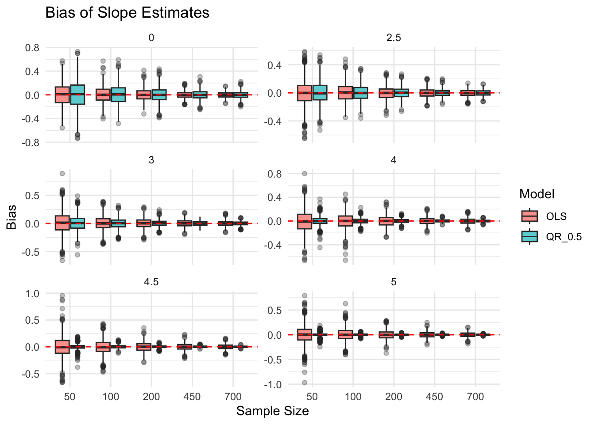
power_skew <- readRDS("power_skew.rds")
power_skew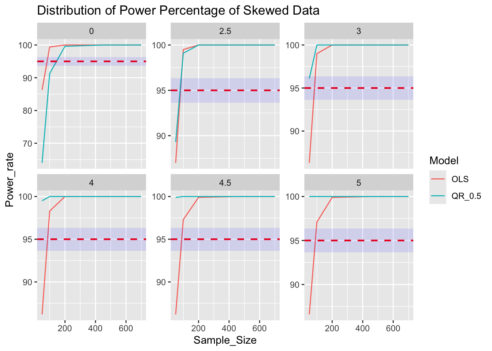
cover_skew <- readRDS("coverage_skew.rds")
cover_skew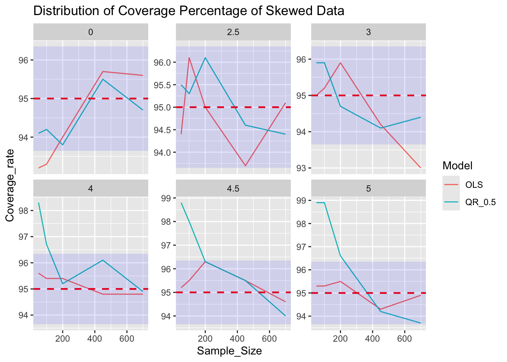
type1_qr <- readRDS("typei_2models_skew.rds")
type1_qr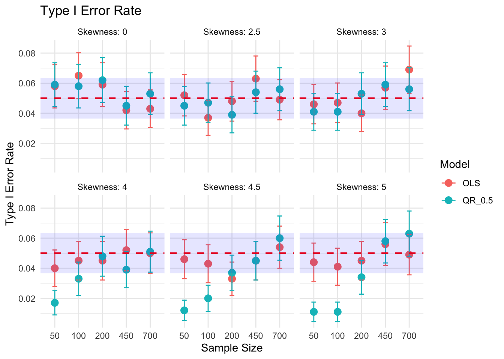
The second scenario is to fit OLS and QR when the variance of the equation increases as the \(x_i\) increases. To add heteroskedasticity, the original error distribution is multiplied by a linear equation, \(1 + x\times \frac{1}{7}\) as follows: \[ \epsilon(x_i) = N(0, \sigma^2) \times (1 + x_i \times \frac{1}{7}) \] When the residual distribution is random, it follows a normal distribution, thus the regression line at different quantile levels display similar stiffness or the slopes of each regression line are similar. However, once the heteroscedasticity exists, the slope value increases as the quantile level increases. The Figure 5 below illustrates this behavior in the 700 sample size. The lowest percentile’s regression line is the bottom line where the stiffness of slope is lowest, while the highest percentile’s regression line has the stiffest slope.
homo_var1 <- readRDS("homo_var.rds")
heter_var1 <- readRDS("heter_var.rds")
p1 <- homo_var1 | heter_var1
p1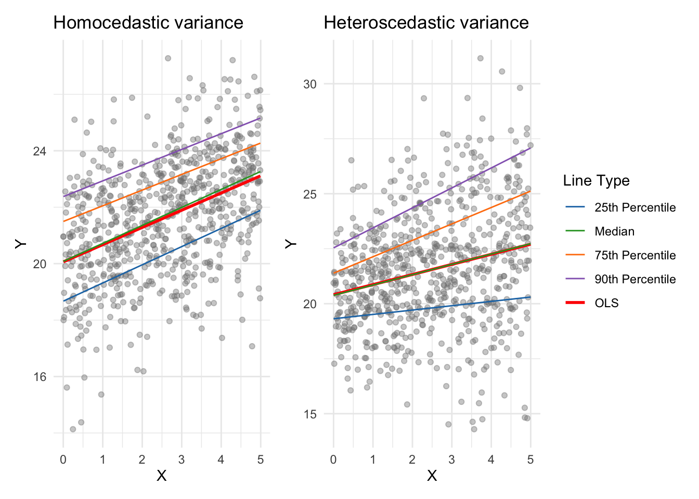
Same as previous simulation, OLS and QR are evaluated by the boxplots of slope and its bias Figure 6, the power percentage Figure 7, coverage percentage Figure 7, and type I error rate Figure 8 within their 95% confidence interval as below. The expected value of each metric is plotted in red dashed line with the cnfidence interval is the shaded area.
slope_all_heters <- readRDS("slope_all_heter.rds")
biashe <- readRDS("Bias_all_heter.rds")
p5 <- slope_all_heters | biashe
p5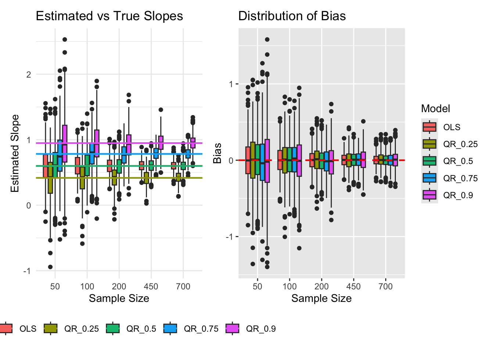
power_heter <- readRDS("power_heter.rds")
cover_heter <- readRDS("cover_heter.rds")
power_heter | cover_heter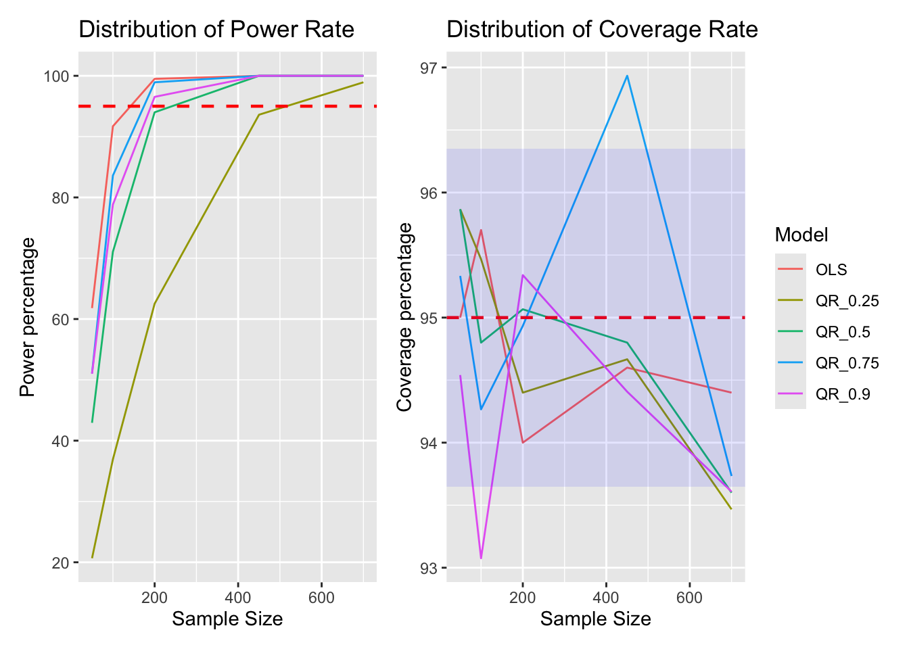
typei_2models_he <- readRDS("typei_2models_he.rds")
typei_2models_he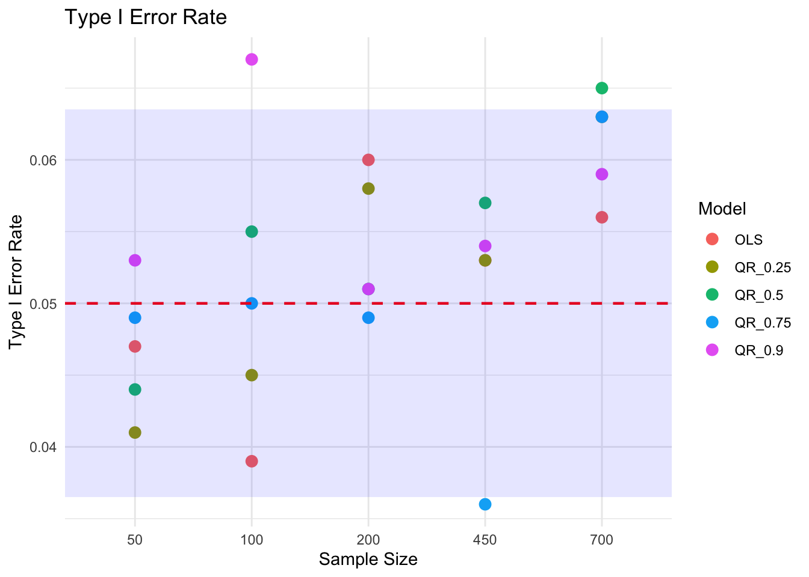
Stroke is a leading cause of death in the United States (CDC 2024b). The report on CDC says that there is one person has a stroke in every 40 seconds, and dies of it for every three minutes and 14 seconds. Almost 25% of those who had stroke would have stroke again. This number is very high, and it is worth investigating. Understanding which factors and how they contribution to stroke outcomes is a informed practice to prevent or at least lower the chance of having stroke.
This project uses the county level data, i.e., each observation is a county, from (CDC, n.d.) and (County Health Rankings & Roadmaps, n.d.) in the United States for the year 2022. The outcome variable in this study is the crude prevalence of stroke (STROKE) from (CDC, n.d.), measured as the percentage of adults in a county who have ever been told by a health professional that they had a stroke (CDC 2024a). This variable is derived from a multi-level regression and post-stratification approach on data from other sources using Monte Carlo simulation, thus it values might underestimate the true prevalence.
The predictors, from (County Health Rankings & Roadmaps, n.d.) are as below:
All key variables were converted to numeric format to ensure compatibility with regression modeling. Rows containing missing values were removed, and the spatial geometry column was dropped to simplify this regression analysis. The final analytic sample consisted of 3,107 counties with complete information on stroke prevalence and all predictors. There were no remaining missing values in the outcome variable STROKE or the primary predictors after cleaning. The variables for the data set are joined by the county ID. Since Stroke prevalence is right-skewed at approximately 0.6 unit, see Figure 9. This shows that though most counties have similar stroke prevalence in the lower range, there is a smaller number of counties exhibiting substantially higher rates. This skewness motivated the comparison between OLS and QR at median.
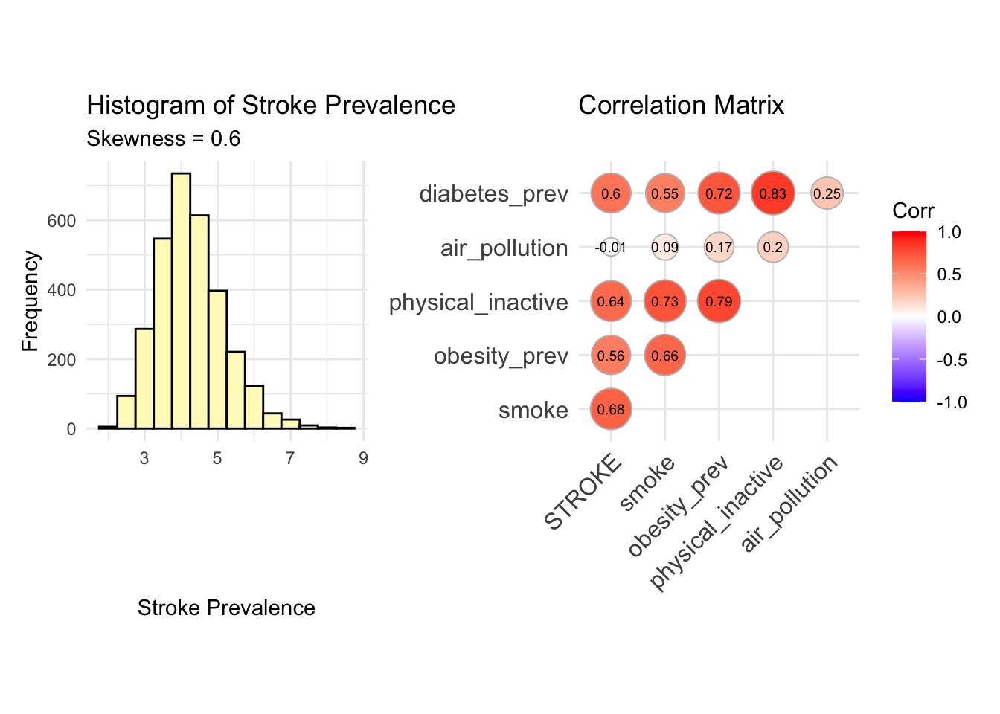
To examine the bivariate relationships among variables, a correlation matrix was computed. Based on the matrix, stroke prevalence has extremely weak correlation to pollutant PM2.5 density, thus the air pollution variable is removed. Meanwhile, physical inactivity prevalence has high correlation to diabetes prevalence and obesity prevalence, signaling a possibility of multi-collinearity. To remove the multi-collinear variable, variance inflation factor (VIF) (Akinwande et al. 2015) test is carried out on linear regression with and without high VIF variable. this These steps ensured that the data set was properly prepared to fit OLS and QR at median.
After fitting the linear regression of stroke prevalence on all predictors, obesity prevalence is not a significant factor influencing the stroke outcome, thus it is removed. The VIF of physical inactivity prevalence goes from 5.37 to 4.80 after removing obesity prevalence, and the coefficients before and after are the similar. Thus, physical inactvity is kept for the final fitting. Finally, the model follows this equation: \[ \begin{aligned} \text{Stroke prevalence} &\sim \alpha + \beta_1 \times \text{(smoke prevelence)} + \beta_2 \times \text{(diabetes prevalence)} \\ &+ \beta_3 \times \text{(physical inactivity prevalence)} \end{aligned} \]
Stroke prevalence is fitted by OLS and QR at median. There is only mild difference between the intercepts of OLS and QR, at 0.58352 and 0.47272, respectively. It is the same for smoke prevalence and diabetes prevalence. Meanwhile, the effect or coefficient of physical inactivity prevalence in OLS is one unit less than in QR, at 0.85461 and 1.82025 respectively. The two models returns similar coefficients of the predictors as follows:
\[ \begin{aligned} \text{OLS: Stroke prevalence} &\sim 0.58352 + 10.68295 \times \text{(smoke prevelence)} \\ &+ 11.50501 \times \text{(diabetes prevalence)} \\ &+ 0.85461 \times \text{(physical inactivity prevalence)} \end{aligned} \] \[ \begin{aligned} \text{QR (median): Stroke prevalence} &\sim 0.47272 + 10.78209 \times \text{(smoke prevelence)} \\ &+ 9.00408 \times \text{(diabetes prevalence)} \\ &+ 1.82025 \times \text{(physical inactivity prevalence)} \end{aligned} \] In OLS, the highest influential predictor is diabetes prevalence, while it is smoke prevalence in QR model. Since we have confirm that median regression provides close fit as OLS, we can investigate the change of the effect from each predictor on the stroke outcome. To so this, the slope values of regression at the percentiles, \(\tau^{th} = 0.25, 0.50, 0.75, 0.90\), are computed and visualized in Figure 10. The slopes by OLS is plotted by dashed line, and the slopes by QR is in solid line.
coef_stroke <- readRDS("coef.stroke.rds")
coef_stroke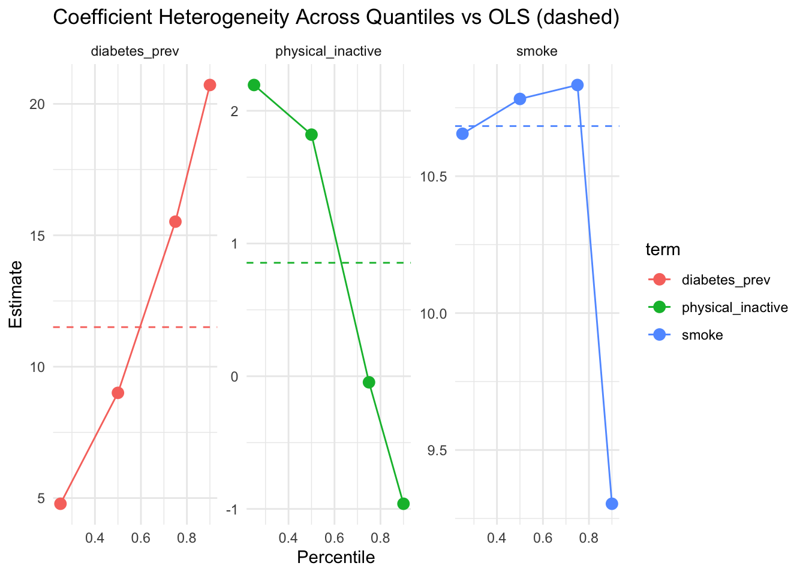
At the same time, I also add the regression lines of diabetes prevalence on stroke prevalence at, \(\tau^{th} = 0.25, 0.50, 0.75, 0.90\), to showcase how the effect of diabetes prevalence changes on different percentiles of stroke outcomes.
plot.dist <- readRDS("plot.dist.rds")
plot.dist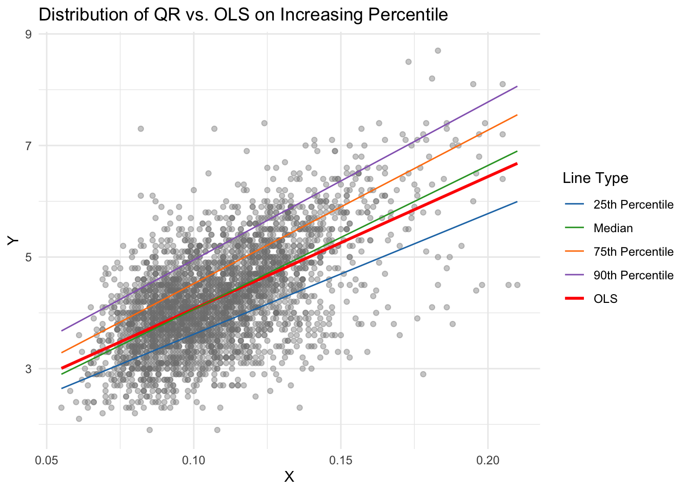
To access the performance of OLS and QR at median, the coverage percentage of multiple prediction intervals are recorded in Table 1.
pre.interval.stroket <- readRDS("pre.interval.stroket.rds")
pre.interval.stroket| Interval | OLS | QR |
|---|---|---|
| 50% | 51.30 | 49.92 |
| 70% | 72.22 | 70.13 |
| 80% | 85.16 | 80.08 |
| 90% | 99.26 | 89.93 |
Based on the bias boxplots Figure 1, the convergence to zero of bias in QR at median becomes more aggressive from skewness = 2.5 with extremely small range compared to OLS from skewness = 4 regardless of sample size. The power percentage, Figure 2, OLS accelerates to 100% starting from sample size 200 for all skewness level. Meanwhile, QR at median is more conservative when skewness is equal and greater than 4. Particularly, the power percentage starts from almost at 100% from small sample size to larger sample size.
The coverage percentage Figure 3 fluctuates within the 95% confidence interval most case. For the first three skewness level, \(s = 0, 2.5, 3\), the coverage rate of QR at median is always within the confidence interval with less fluctuation compared to OLS. However, from skewness = 4, the coverage percentage is extremely high in smaller sample size, even though eventually it converges to the 95% confidence interval. Although OLS is always within the confidence interval in the high skewness levels, there is a possibility of range of the response is averaged and covered the extreme values.
Type I errors Figure 4 of OLS are stable an within the empirical 95% for 5% of false positive cases. However, QR at median has increasing type I error rate as the sample size increases and is conservative for smaller sample sizes, e.g., type I error rate is approximately 1% when the skew is 4.5 and 5 at the smaller sample sizes.
From Figure 5, we can confirm that the regression line at different percentiles alters as the data is heteroscedastic. With percentiles at, \(\tau^{th} = 25, 50, 75, 90\), Figure 6 shows that the range of both estimated slopes and their bias are different. Overall, as the sample size increases, the bias decreases and converges to zero. At the same time, the slope estimate range also declines with the increasing sample, showing good convergence. QR at \(90^{th}\) percentile has the largest slope, i.e., stiffest slope, and its bias has the large range. Slope estimates of median regression and OLS are similar, thus for this test, median regression can be used instead of OLS to plot the data distribution. Notice, OLS has the smallest range of both slope and its bias. This could be due to the symmetric increase of variance.
Next, the power percentage in Figure 7 converges to 100% as the sample size increases for all models. This showcases the models become more stable in larger sample sizes. Among them, OLS has the highest power percentage in general. The coverage percentage also illustrates good outcome since all of the models coverage is within the 95% confidence interval. QR at \(75^{th}\) percentile has the greatest fluctuation; however, its rate is still within the confidence interval at the end. Although a few models have coverage percentage lightly below the range, the gaps are very small, and we can consider them within the confidence interval.
Lastly, almost all of the type I error rate are within the 95% confidence interval of the 5% false positive rate. There are a few times the Qr models have higher or lower error rate than the range. However, since the gaps are small, we can still consider them within the 95% range. Therefore, both OLS and QR fits the data well. Since the variance is heteroscedastic, QR at median should be used in place of OLS.
The fitted models of OLS and QR at median are highly similar Section 4.2. However, from Figure 10, OLS has flatted out the changing effect of each predictor on the stroke prevalence. Particularly, diabetes prevalence has higher impact on the counties with higher diagnosed stroke cases (higher percentiles). The effect goes from approximately 5 at \(25^{th}\) percentile to over 20 unit at \(90^{th}\) percentile, which is more than 3 times influence on lower stroke rate counties. Meanwhile, physical inactivity prevalence has the opposite effect from diabetes prevalence. From counties with lower to higher stroke prevalence, the effect of the physical inactivity prevalence declines. At some point, the effect is dismissed (at 0), then has a negative influence on the stroke prevalence. Smoke prevalence has both increasing and decreasing impact on the stroke outcome. As the percentile increases, the effect increases, but it drops by 2 units as the percentile exceeds \(75^{th}\). With OLS alone, these behaviors of the predictors will be overlooked. One can conclude that counties with high diagnosed stroke rate may need to investigate the diabetes rate in order to prevent future stroke.
Another comparison between OLS and QR is through prediction interval Table 1. We expect the percentage of stroke prevalence of each prediction interval to be equal to its range. At the first two interval, 50%, and 70%, both OLS and QR at median returns the ranges that cover approximately 50% and 70% of the stroke prevalence. However, while QR consistently cover similar percent of stroke outcome and their intervals, OLS prediction ranges cover more than the expected number. For example, OLS cover 85.16% and 99.26% of the stroke prevalence in its 80% and 90% interval. These two coverage rates exceed by 5% and 9% from the range, which hints at the over fitting. Thus, based on the non-constant effect of predictor and good coverage rate in prediction interval, QR surpasses OLS in modeling the stroke prevalence for this data set.
This report has demonstrated both the theoretical foundations and practical advantages of QR as a robust and flexible alternative to OLS. Unlike OLS, which estimates only the conditional mean and can be heavily influenced by skewness, or heteroscedasticity, QR provides a complete picture of how predictors affect different parts of the outcome distribution. Through simulations with skewed and heteroscedastic errors, we showed that quantile regression maintains reliable performance where OLS assumptions are violated to certain levels of skewness and heteroscedasticity. In the case of skewness at 2.5 and 3, QR is more robust compared to OLS. More test should be done to assess the performance of OLS and QR at higher skewness levels.
In the real-world application to 2022 U.S. county-level stroke prevalence data, the comparison between OLS and QR, QR reveals meaningful heterogeneity that would have been missed by OLS alone: diabetes prevalence has a substantially stronger effect in high-stroke counties, while physical inactivity prevalence and smoke prevalence shows the opposite pattern in general.
These findings underscore the value of QR in public health research, where understanding effects at the tails of the distribution, e.g., high-risk population, is often more action-relevant than the average effect. While the analysis is limited to face value of the data, it illustrates how QR can uncover complex relationships and overcome misleading conclusions drawn from mean-based models.
In summary, QR is not merely an extension of OLS but a powerful tool that better reflects real-world data complexities. By moving beyond the mean, researchers can gain deeper, more actionable insights into the drivers of health outcomes. Future work from this project can be investigating the fit of OLS and QR on larger sample size and more levels of skewness.
Grok.com was used to help with coding.